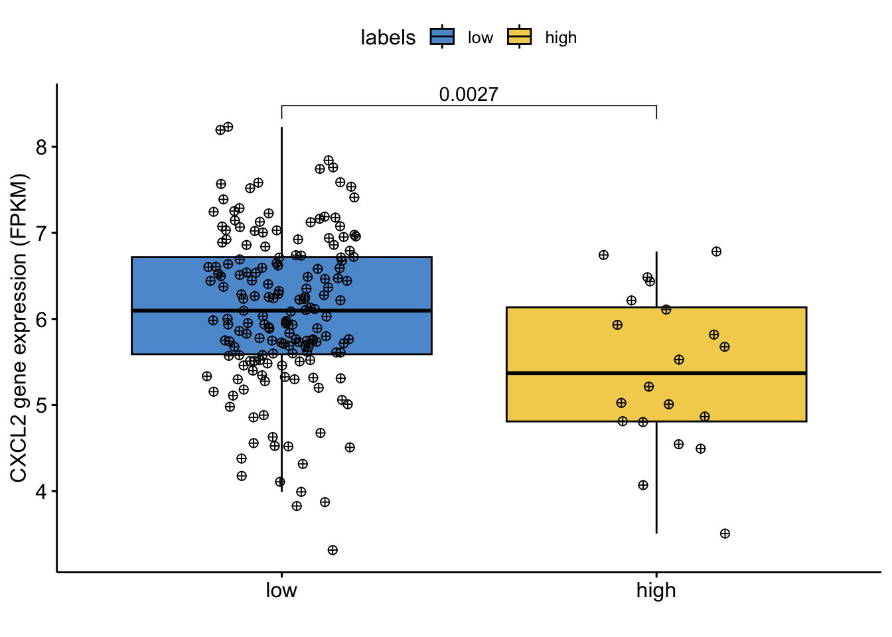

Last updated: 2024-09-18
Checks: 7 0
Knit directory: Tutorials/
This reproducible R Markdown analysis was created with workflowr (version 1.7.1). The Checks tab describes the reproducibility checks that were applied when the results were created. The Past versions tab lists the development history.
Great! Since the R Markdown file has been committed to the Git repository, you know the exact version of the code that produced these results.
Great job! The global environment was empty. Objects defined in the global environment can affect the analysis in your R Markdown file in unknown ways. For reproduciblity it’s best to always run the code in an empty environment.
The command set.seed(20240905) was run prior to running
the code in the R Markdown file. Setting a seed ensures that any results
that rely on randomness, e.g. subsampling or permutations, are
reproducible.
Great job! Recording the operating system, R version, and package versions is critical for reproducibility.
Nice! There were no cached chunks for this analysis, so you can be confident that you successfully produced the results during this run.
Great job! Using relative paths to the files within your workflowr project makes it easier to run your code on other machines.
Great! You are using Git for version control. Tracking code development and connecting the code version to the results is critical for reproducibility.
The results in this page were generated with repository version a7f82c5. See the Past versions tab to see a history of the changes made to the R Markdown and HTML files.
Note that you need to be careful to ensure that all relevant files for
the analysis have been committed to Git prior to generating the results
(you can use wflow_publish or
wflow_git_commit). workflowr only checks the R Markdown
file, but you know if there are other scripts or data files that it
depends on. Below is the status of the Git repository when the results
were generated:
Ignored files:
Ignored: .DS_Store
Ignored: data/.DS_Store
Unstaged changes:
Deleted: data/COADREAD.clin.merged.picked.txt
Deleted: data/COADREAD.rnaseqv2__illuminahiseq_rnaseqv2__unc_edu__Level_3__RSEM_genes_normalized__data.data.txt
Note that any generated files, e.g. HTML, png, CSS, etc., are not included in this status report because it is ok for generated content to have uncommitted changes.
These are the previous versions of the repository in which changes were
made to the R Markdown (analysis/TCGA.Rmd) and HTML
(docs/TCGA.html) files. If you’ve configured a remote Git
repository (see ?wflow_git_remote), click on the hyperlinks
in the table below to view the files as they were in that past version.
| File | Version | Author | Date | Message |
|---|---|---|---|---|
| html | a7f82c5 | tkcaccia | 2024-09-18 | Build site. |
| Rmd | cbb2736 | tkcaccia | 2024-09-18 | Start my new project |
Analysing miRseq Gene Expression Data from a Colerectal Adenocarcinoma Cohort:
# install.packages("readxl")
library(readxl)
library(KODAMA)Prepare Clinical Data:
# Read in Clinical Data:
coad=read.csv("../Data/TCGA/COAD.clin.merged.picked.txt",sep="\t",check.names = FALSE, row.names = 1)
coad <- as.data.frame(coad)
# Clean column names: replace dots with dashes & convert to uppercase
colnames(coad) = toupper(colnames(coad))
# Transpose the dataframe so that rows become columns and vice versa
coad = t(coad) Prepare miRNA-seq expression data:
# Read RNA-seq expression data:
r = read.csv("../Data/TCGA/COAD.rnaseqv2__illuminaga_rnaseqv2__unc_edu__Level_3__RSEM_genes_normalized__data.data.txt", sep = "\t", check.names = FALSE, row.names = 1)
# Remove the first row:
r = r[-1,]
# Convert expression data to numeric matrix format
temp = matrix(as.numeric(as.matrix(r)), ncol=ncol(r))
colnames(temp) = colnames(r)
rownames(temp) = rownames(r)
RNA = temp
# Transpose the matrix so that genes are rows and samples are columns
RNA = t(RNA) Extract patient and tissue information from column names:
tcgaID = list()
# Extract sample ID
tcgaID$sample.ID <- substr(colnames(r), 1, 16)
# Extract patient ID
tcgaID$patient <- substr(colnames(r), 1, 12)
# Extract tissue type
tcgaID$tissue <- substr(colnames(r), 14, 16)
tcgaID = as.data.frame(tcgaID) Select Primary Solid Tumor tissue data (“01A”):
sel=tcgaID$tissue == "01A"
tcgaID.sel = tcgaID[sel, ]
# Subset the RNA expression data to match selected samples
RNA.sel = RNA[sel, ]Intersect patient IDs between clinical and RNA data:
sel = intersect(tcgaID.sel$patient, rownames(coad))
# Subset the clinical data to include only selected patients:
coad.sel = coad[sel, ]
# Assign patient IDs as row names to the RNA data:
rownames(RNA.sel) = tcgaID.sel$patient
# Subset the RNA data to include only selected patients
RNA.sel = RNA.sel[sel, ]Prepare labels for pathology stages:
Classify stages t1, t2, &
t3 as “low”
Classify stages t4, t4a, &
t4b as “high”
Convert any tis stages to NA
labels = coad.sel[, "pathology_T_stage"]
labels[labels %in% c("t1", "t2", "t3", "tis")] = "low"
labels[labels %in% c("t4", "t4a", "t4b")] = "high"Log Transform the expression data for our selected gene
CXCL2:
CXCL2 <- log(1 + RNA.sel[, "CXCL2|2920"])
LCN2 <- log(1 + RNA.sel[,"LCN2|3934" ])Boxplot to visualize the distribution of log transformed gene expression by pathology stage:
colors=c("#0073c2bb","#efc000bb","#868686bb","#cd534cbb","#7aabdcbb","#003c67bb")
library(ggpubr)Loading required package: ggplot2df=data.frame(variable=CXCL2,labels=labels)
my_comparisons=list()
my_comparisons[[1]]=c(1,2)
Nplot1=ggboxplot(df, x = "labels", y = "variable",fill="labels",
width = 0.8,
palette=colors,
add = "jitter",
add.params = list(size = 2, jitter = 0.2,fill=3, shape=10))+
ylab("CXCL2 gene expression (FPKM)")+ xlab("")+
stat_compare_means(comparisons = my_comparisons,method="wilcox.test")
Nplot1
| Version | Author | Date |
|---|---|---|
| a7f82c5 | tkcaccia | 2024-09-18 |
Enrichment analysis
if (!require("BiocManager", quietly = TRUE))
install.packages("BiocManager")Bioconductor version '3.18' is out-of-date; the current release version '3.19'
is available with R version '4.4'; see https://bioconductor.org/installBiocManager::install("GSVA")'getOption("repos")' replaces Bioconductor standard repositories, see
'help("repositories", package = "BiocManager")' for details.
Replacement repositories:
CRAN: https://cran.rstudio.com/Bioconductor version 3.18 (BiocManager 1.30.23), R 4.3.3 (2024-02-29)Warning: package(s) not installed when version(s) same as or greater than current; use
`force = TRUE` to re-install: 'GSVA'Old packages: 'abind', 'arrow', 'BiocManager', 'boot', 'broom.helpers',
'caTools', 'clock', 'corrplot', 'cpp11', 'curl', 'data.table', 'Deriv',
'DescTools', 'digest', 'e1071', 'emmeans', 'EnvStats', 'evaluate', 'expm',
'fastDummies', 'gert', 'ggrepel', 'golem', 'hardhat', 'harmony', 'httr2',
'lpSolve', 'matrixStats', 'microbenchmark', 'minqa', 'mvtnorm', 'nlme',
'patchwork', 'phangorn', 'pkgdown', 'ps', 'ragg', 'RANN', 'recipes', 'rjson',
'rmarkdown', 'sf', 'sfsmisc', 'Signac', 'spatstat.explore',
'spatstat.univar', 'spatstat.utils', 'spData', 'spdep', 'tinytex', 'waldo',
'wk', 'xfun'install.packages("GSA")
The downloaded binary packages are in
/var/folders/p9/7vjxs6dd7p70vybzdhy_0hw00000gn/T//Rtmpcpo8DS/downloaded_packageslibrary("GSVA")
library("GSA")
library("KODAMA")
genes=t(RNA.sel)
t=unlist(lapply(strsplit(rownames(genes),"\\|"),function(x) x[1]))
selt=ave(1:length(t), t, FUN = length)
genes=genes[selt==1,]
rownames(genes)=t[selt==1]
geneset=GSA.read.gmt("../Data/Genesets/msigdb_v2023.2.Hs_GMTs/c2.cp.kegg_legacy.v2023.2.Hs.symbols.gmt")1234567891011121314151617181920212223242526272829303132333435363738394041424344454647484950515253545556575859606162636465666768697071727374757677787980818283848586878889909192939495969798991001011021031041051061071081091101111121131141151161171181191201211221231241251261271281291301311321331341351361371381391401411421431441451461471481491501511521531541551561571581591601611621631641651661671681691701711721731741751761771781791801811821831841851861
2
3
4
5
6
7
8
9
10
11
12
13
14
15
16
17
18
19
20
21
22
23
24
25
26
27
28
29
30
31
32
33
34
35
36
37
38
39
40
41
42
43
44
45
46
47
48
49
50
51
52
53
54
55
56
57
58
59
60
61
62
63
64
65
66
67
68
69
70
71
72
73
74
75
76
77
78
79
80
81
82
83
84
85
86
87
88
89
90
91
92
93
94
95
96
97
98
99
100
101
102
103
104
105
106
107
108
109
110
111
112
113
114
115
116
117
118
119
120
121
122
123
124
125
126
127
128
129
130
131
132
133
134
135
136
137
138
139
140
141
142
143
144
145
146
147
148
149
150
151
152
153
154
155
156
157
158
159
160
161
162
163
164
165
166
167
168
169
170
171
172
173
174
175
176
177
178
179
180
181
182
183
184
185names(geneset$genesets)=geneset$geneset.names
geneset=geneset$genesets
gsva_TCGA <- gsva(genes, geneset,min.sz = 5)Warning: Calling gsva(expr=., gset.idx.list=., method=., ...) is deprecated;
use a method-specific parameter object (see '?gsva').Warning in .filterFeatures(expr, method): 283 genes with constant expression
values throughout the samples.Warning in .filterFeatures(expr, method): Since argument method!="ssgsea",
genes with constant expression values are discarded.Estimating GSVA scores for 186 gene sets.
Estimating ECDFs with Gaussian kernels
| | | 0% | | | 1% | |= | 1% | |= | 2% | |== | 2% | |== | 3% | |=== | 4% | |=== | 5% | |==== | 5% | |==== | 6% | |===== | 6% | |===== | 7% | |===== | 8% | |====== | 8% | |====== | 9% | |======= | 10% | |======== | 11% | |======== | 12% | |========= | 12% | |========= | 13% | |========== | 14% | |========== | 15% | |=========== | 15% | |=========== | 16% | |============ | 17% | |============ | 18% | |============= | 18% | |============= | 19% | |============== | 19% | |============== | 20% | |=============== | 21% | |=============== | 22% | |================ | 23% | |================= | 24% | |================= | 25% | |================== | 25% | |================== | 26% | |=================== | 27% | |==================== | 28% | |==================== | 29% | |===================== | 30% | |===================== | 31% | |====================== | 31% | |====================== | 32% | |======================= | 32% | |======================= | 33% | |======================== | 34% | |======================== | 35% | |========================= | 35% | |========================= | 36% | |========================== | 37% | |========================== | 38% | |=========================== | 38% | |=========================== | 39% | |============================ | 40% | |============================= | 41% | |============================= | 42% | |============================== | 42% | |============================== | 43% | |============================== | 44% | |=============================== | 44% | |=============================== | 45% | |================================ | 45% | |================================ | 46% | |================================= | 47% | |================================= | 48% | |================================== | 48% | |================================== | 49% | |=================================== | 49% | |=================================== | 50% | |=================================== | 51% | |==================================== | 51% | |==================================== | 52% | |===================================== | 52% | |===================================== | 53% | |====================================== | 54% | |====================================== | 55% | |======================================= | 55% | |======================================= | 56% | |======================================== | 56% | |======================================== | 57% | |======================================== | 58% | |========================================= | 58% | |========================================= | 59% | |========================================== | 60% | |=========================================== | 61% | |=========================================== | 62% | |============================================ | 62% | |============================================ | 63% | |============================================= | 64% | |============================================= | 65% | |============================================== | 65% | |============================================== | 66% | |=============================================== | 67% | |=============================================== | 68% | |================================================ | 68% | |================================================ | 69% | |================================================= | 69% | |================================================= | 70% | |================================================== | 71% | |================================================== | 72% | |=================================================== | 73% | |==================================================== | 74% | |==================================================== | 75% | |===================================================== | 75% | |===================================================== | 76% | |====================================================== | 77% | |======================================================= | 78% | |======================================================= | 79% | |======================================================== | 80% | |======================================================== | 81% | |========================================================= | 81% | |========================================================= | 82% | |========================================================== | 82% | |========================================================== | 83% | |=========================================================== | 84% | |=========================================================== | 85% | |============================================================ | 85% | |============================================================ | 86% | |============================================================= | 87% | |============================================================= | 88% | |============================================================== | 88% | |============================================================== | 89% | |=============================================================== | 90% | |================================================================ | 91% | |================================================================ | 92% | |================================================================= | 92% | |================================================================= | 93% | |================================================================= | 94% | |================================================================== | 94% | |================================================================== | 95% | |=================================================================== | 95% | |=================================================================== | 96% | |==================================================================== | 97% | |==================================================================== | 98% | |===================================================================== | 98% | |===================================================================== | 99% | |======================================================================| 99% | |======================================================================| 100%ma=multi_analysis(t(gsva_TCGA),CXCL2,FUN="correlation.test",method="spearman")
ma=ma[order(as.numeric(ma$`p-value`)),]
ma[1:10,] Feature rho
109 KEGG_NOD_LIKE_RECEPTOR_SIGNALING_PATHWAY 0.43
171 KEGG_TIGHT_JUNCTION -0.32
99 KEGG_MELANOGENESIS -0.31
186 KEGG_WNT_SIGNALING_PATHWAY -0.31
3 KEGG_ADHERENS_JUNCTION -0.29
182 KEGG_VASOPRESSIN_REGULATED_WATER_REABSORPTION -0.29
133 KEGG_PPAR_SIGNALING_PATHWAY -0.28
153 KEGG_RIG_I_LIKE_RECEPTOR_SIGNALING_PATHWAY 0.27
22 KEGG_BASAL_CELL_CARCINOMA -0.27
51 KEGG_EPITHELIAL_CELL_SIGNALING_IN_HELICOBACTER_PYLORI_INFECTION 0.27
p-value FDR
109 6.72e-10 1.25e-07
171 6.09e-06 5.66e-04
99 1.12e-05 6.93e-04
186 1.71e-05 7.97e-04
3 5.45e-05 1.87e-03
182 6.02e-05 1.87e-03
133 1.05e-04 2.79e-03
153 1.54e-04 3.58e-03
22 1.99e-04 4.03e-03
51 2.17e-04 4.03e-03ma=multi_analysis(t(gsva_TCGA),LCN2,FUN="correlation.test",method="spearman")
ma=ma[order(as.numeric(ma$`p-value`)),]
ma[1:10,] Feature rho p-value FDR
153 KEGG_RIG_I_LIKE_RECEPTOR_SIGNALING_PATHWAY 0.35 8.04e-07 1.46e-04
42 KEGG_CYTOSOLIC_DNA_SENSING_PATHWAY 0.34 2.23e-06 1.46e-04
41 KEGG_CYTOKINE_CYTOKINE_RECEPTOR_INTERACTION 0.34 2.36e-06 1.46e-04
87 KEGG_INTESTINAL_IMMUNE_NETWORK_FOR_IGA_PRODUCTION 0.33 3.61e-06 1.49e-04
135 KEGG_PRIMARY_IMMUNODEFICIENCY 0.33 4.01e-06 1.49e-04
109 KEGG_NOD_LIKE_RECEPTOR_SIGNALING_PATHWAY 0.32 5.46e-06 1.69e-04
14 KEGG_APOPTOSIS 0.32 6.49e-06 1.72e-04
172 KEGG_TOLL_LIKE_RECEPTOR_SIGNALING_PATHWAY 0.30 2.19e-05 5.10e-04
3 KEGG_ADHERENS_JUNCTION -0.30 3.31e-05 6.84e-04
186 KEGG_WNT_SIGNALING_PATHWAY -0.29 3.74e-05 6.96e-04
sessionInfo()R version 4.3.3 (2024-02-29)
Platform: aarch64-apple-darwin20 (64-bit)
Running under: macOS Sonoma 14.5
Matrix products: default
BLAS: /Library/Frameworks/R.framework/Versions/4.3-arm64/Resources/lib/libRblas.0.dylib
LAPACK: /Library/Frameworks/R.framework/Versions/4.3-arm64/Resources/lib/libRlapack.dylib; LAPACK version 3.11.0
locale:
[1] en_US.UTF-8/en_US.UTF-8/en_US.UTF-8/C/en_US.UTF-8/en_US.UTF-8
time zone: America/Bogota
tzcode source: internal
attached base packages:
[1] stats graphics grDevices utils datasets methods base
other attached packages:
[1] GSA_1.03.3 GSVA_1.50.5 BiocManager_1.30.23
[4] ggpubr_0.6.0 ggplot2_3.5.1 KODAMA_3.1
[7] umap_0.2.10.0 Rtsne_0.17 minerva_1.5.10
[10] readxl_1.4.3 workflowr_1.7.1
loaded via a namespace (and not attached):
[1] rstudioapi_0.16.0 jsonlite_1.8.8
[3] magrittr_2.0.3 farver_2.1.2
[5] rmarkdown_2.27 fs_1.6.4
[7] zlibbioc_1.48.2 vctrs_0.6.5
[9] memoise_2.0.1 DelayedMatrixStats_1.24.0
[11] RCurl_1.98-1.16 askpass_1.2.0
[13] rstatix_0.7.2 htmltools_0.5.8.1
[15] S4Arrays_1.2.1 broom_1.0.6
[17] cellranger_1.1.0 Rhdf5lib_1.24.2
[19] SparseArray_1.2.4 rhdf5_2.46.1
[21] sass_0.4.9 bslib_0.8.0
[23] cachem_1.1.0 whisker_0.4.1
[25] lifecycle_1.0.4 pkgconfig_2.0.3
[27] rsvd_1.0.5 Matrix_1.6-5
[29] R6_2.5.1 fastmap_1.2.0
[31] GenomeInfoDbData_1.2.11 MatrixGenerics_1.14.0
[33] digest_0.6.36 colorspace_2.1-1
[35] AnnotationDbi_1.64.1 S4Vectors_0.40.2
[37] ps_1.7.7 rprojroot_2.0.4
[39] irlba_2.3.5.1 RSpectra_0.16-2
[41] GenomicRanges_1.54.1 RSQLite_2.3.7
[43] beachmat_2.18.1 labeling_0.4.3
[45] fansi_1.0.6 httr_1.4.7
[47] abind_1.4-5 compiler_4.3.3
[49] bit64_4.0.5 withr_3.0.1
[51] backports_1.5.0 BiocParallel_1.36.0
[53] carData_3.0-5 DBI_1.2.3
[55] highr_0.11 HDF5Array_1.30.1
[57] ggsignif_0.6.4 openssl_2.2.1
[59] DelayedArray_0.28.0 tools_4.3.3
[61] httpuv_1.6.15 glue_1.7.0
[63] callr_3.7.6 rhdf5filters_1.14.1
[65] promises_1.3.0 grid_4.3.3
[67] getPass_0.2-4 generics_0.1.3
[69] gtable_0.3.5 tidyr_1.3.1
[71] ScaledMatrix_1.10.0 BiocSingular_1.18.0
[73] car_3.1-2 utf8_1.2.4
[75] XVector_0.42.0 BiocGenerics_0.48.1
[77] pillar_1.9.0 stringr_1.5.1
[79] later_1.3.2 dplyr_1.1.4
[81] lattice_0.22-6 bit_4.0.5
[83] annotate_1.80.0 tidyselect_1.2.1
[85] SingleCellExperiment_1.24.0 Biostrings_2.70.3
[87] knitr_1.48 git2r_0.33.0
[89] IRanges_2.36.0 SummarizedExperiment_1.32.0
[91] stats4_4.3.3 xfun_0.46
[93] Biobase_2.62.0 matrixStats_1.3.0
[95] stringi_1.8.4 yaml_2.3.10
[97] evaluate_0.24.0 codetools_0.2-20
[99] tibble_3.2.1 graph_1.80.0
[101] cli_3.6.3 xtable_1.8-4
[103] reticulate_1.39.0 munsell_0.5.1
[105] processx_3.8.4 jquerylib_0.1.4
[107] Rcpp_1.0.13 GenomeInfoDb_1.38.8
[109] png_0.1-8 XML_3.99-0.17
[111] parallel_4.3.3 blob_1.2.4
[113] sparseMatrixStats_1.14.0 bitops_1.0-8
[115] GSEABase_1.64.0 scales_1.3.0
[117] purrr_1.0.2 crayon_1.5.3
[119] rlang_1.1.4 KEGGREST_1.42.0